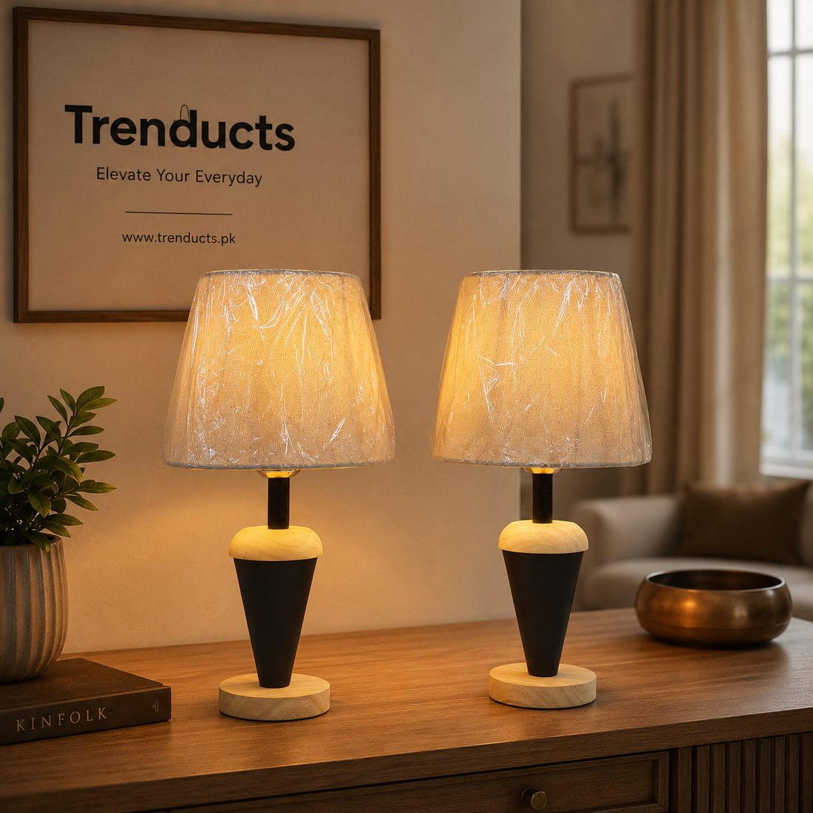
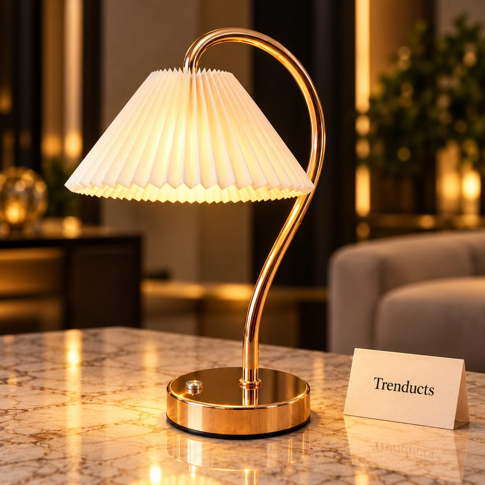

In a busy household, a quiet corner to read is a small luxury. Between the television in the lounge, children doing homework and relatives visiting, finding a peaceful spot can feel impossible. Yet a reading corner does not require a separate room. It needs a comfortable seat, good light and a little separation from the noise.
Whether you read novels, Urdu poetry, the Quran or school textbooks, here is how to set up a corner that invites you to sit down and stay.
Choose the spot
Look for a corner that sees less traffic: beside a bedroom window, at the end of a lounge away from the television, or even a landing on the stairs. Natural light during the day is a bonus. Avoid spots right next to the main door or the kitchen, where people constantly pass.
Light is the heart of a reading corner
Reading in poor light strains the eyes and makes you tired faster. Ceiling lights alone are usually not enough, because they cast your own shadow onto the page. A dedicated lamp placed beside or slightly behind you, shining onto the book, works much better.

- Table lamps with a shade give soft, warm light and suit a side table next to a chair.
- Gooseneck or adjustable lamps let you point light exactly at the page.
- Clip-on reading lights attach to a headboard, shelf or book and are handy for bedtime reading without disturbing a sleeping spouse.
- Rechargeable lamps keep working during load-shedding, which is when many people pick up a book anyway.
Warm white bulbs are more relaxing for evening reading than cool, bright white ones, which suit study and detailed work better.
Seating that supports you
A comfortable armchair is ideal, but a floor cushion with a backrest, a window seat or a corner of a bed can work too. The key is support for your back and a place to rest your arms. A small cushion behind the lower back makes long reading sessions more comfortable.
A side table and a little storage
Keep a small side table within reach for a cup of chai, your glasses and the lamp. A small basket or shelf nearby holds the books you are currently reading, so they are not scattered across the house. Resist the urge to fill the corner with every book you own; just the current few is enough.
Make it quiet
Some noise is unavoidable, but you can soften it. A rug absorbs sound. A curtain or a bookshelf can act as a partial divider in an open space. Agree with family members that time in the reading corner is quiet time, especially for children who are learning to read on their own.

Encourage children to read
A reading corner can encourage children to pick up books. Keep a low shelf with their books within reach, a small clip-on light they can switch on themselves and a cushion that is theirs. Reading together for ten minutes before bed builds a habit that stays for life.
Seasonal comfort
In winter, add a shawl or a soft blanket to the chair. In summer, place the corner where a fan reaches, and choose a lamp that does not give off much heat; LED lamps are better than old bulbs for this.
Keep it ready
A reading corner works when it is always ready to use. Return books to the basket, keep the lamp charged or plugged in and clear away cups after each session. When the space is tidy and inviting, you are far more likely to sit down with a book instead of reaching for the phone.
Choosing a lamp
For clip-on, gooseneck and wooden table lamps suited to reading, take a look at www.trenducts.pk/collections/lamps-and-lighting, with delivery across Pakistan.
Your own quiet place
A reading corner is a small investment in calm. With the right light and a comfortable seat, even fifteen minutes of reading at the end of a busy day can feel like a real break.